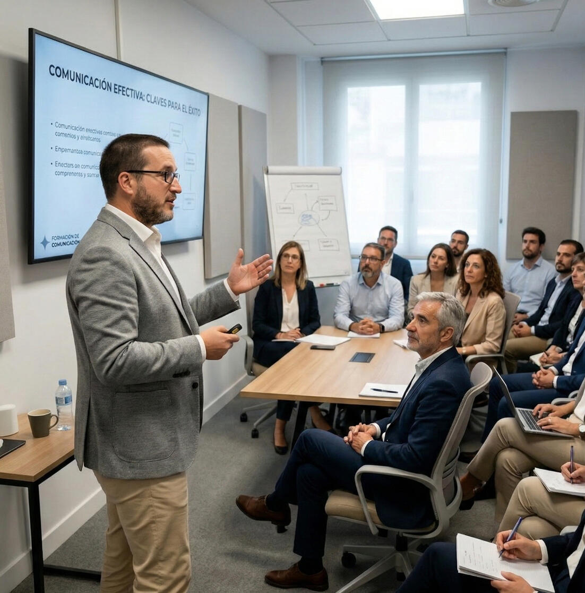

IA aplicada a comunicación corporativa, con criterio
Consultoría estratégica y formación práctica para dircoms, gabinetes de prensa y agencias que quieren integrar la IA sin perder control, tono ni rigor.
La IA ya está dentro de los equipos de comunicación. La diferencia está en usarla con método.
Las herramientas de IA generativa ya forman parte del trabajo diario de muchos equipos de comunicación. El problema no es acceder a ellas. El problema es integrarlas bien: con criterio editorial, verificación, control del tono y protocolos claros para no convertir la rapidez en un riesgo reputacional.
Ahí es donde trabajo. Ayudo a gabinetes de prensa, agencias y responsables de comunicación a incorporar la IA a sus flujos reales de trabajo sin depender de la improvisación. El objetivo no es producir más por producir, sino ganar capacidad operativa sin degradar la calidad del mensaje.
Mi enfoque parte del oficio. Veinte años entre el periodismo de la Cadena COPE, la comunicación institucional en La Moncloa y la comunicación corporativa en BBVA, puestos al servicio de una adopción útil de la IA. No se trata de enseñar tecnología por separado, sino de aplicarla a notas de prensa, argumentarios, seguimiento informativo, preparación de portavoces, documentación y procesos internos del equipo.

Una sesión formativa in-company sobre IA en comunicación corporativa
Conferencias y sesiones ejecutivas
Sesiones para comités, congresos y jornadas de actualización. Explico qué está cambiando de verdad en comunicación corporativa con la llegada de la IA y qué decisiones conviene tomar ahora.
Formación in-company
Talleres prácticos para gabinetes, agencias y equipos de comunicación. Trabajo con materiales y casos reales del cliente para que la formación termine en criterios de uso, no en entusiasmo pasajero.
Consultoría estratégica
Acompañamiento para responsables de comunicación que necesitan priorizar y aterrizar la adopción de IA en su área. Diagnóstico, casos de uso, límites y plan de implementación.
Experiencia en periodismo, agencia, comunicación corporativa e institucional
Soy Lartaun de Azumendi. Mi trayectoria pasa por la Cadena COPE, donde trabajé durante diez años; la comunicación institucional en la Secretaría de Estado de Comunicación de La Moncloa; y la comunicación corporativa en BBVA. Ese recorrido me permite trabajar la IA desde una perspectiva poco habitual: no como una novedad aislada, sino como una herramienta que debe encajar en oficios donde importan el contexto, el tono, la responsabilidad y la precisión.
Hoy desarrollo una línea independiente de consultoría y formación centrada en una pregunta muy concreta: cómo usar la IA en comunicación de una forma útil, segura y profesional.

Trabajando con Claude, una de las mejores IA generativas
Hablemos
Si quieres ordenar cómo usar la IA en tu equipo de comunicación, puedo ayudarte a aterrizarlo con criterio y sin tecnicismos innecesarios.
Ponte en contacto